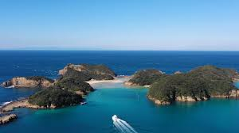

✈️ 2026.04.29 - 05.02 🌿
壱岐・長崎
旅のしおり
旅程・スポット・予約情報をまとめた4日間のしおり
金
1日目
4/29(水) 羽田・福岡
羽田空港
空港散策
夕食
福岡到着

2日目
4/30(木) 博多・壱岐・長崎
食堂おわん
ジェットフォイル
辰の島
稲佐山夜景
3日目
5/1(金) 長崎・小浜
グラバー園
長崎新地中華街
小浜温泉
伊勢屋
4日目
5/2(土) 雲仙・西海橋・帰路
雲仙ロープウェイ
日帰り温泉
西海橋
長崎空港
日程
1日目
4/29(水)
2日目
4/30(木)
3日目
5/1(金)
4日目
5/2(土)